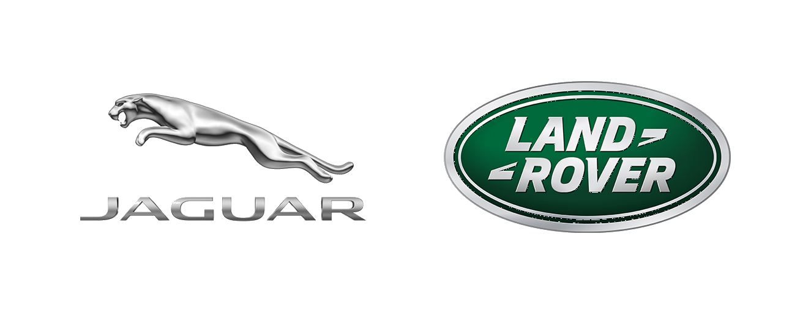
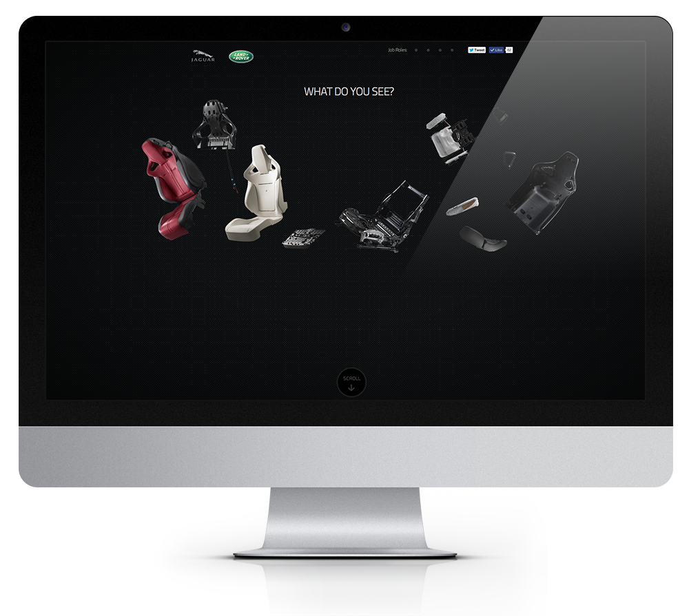
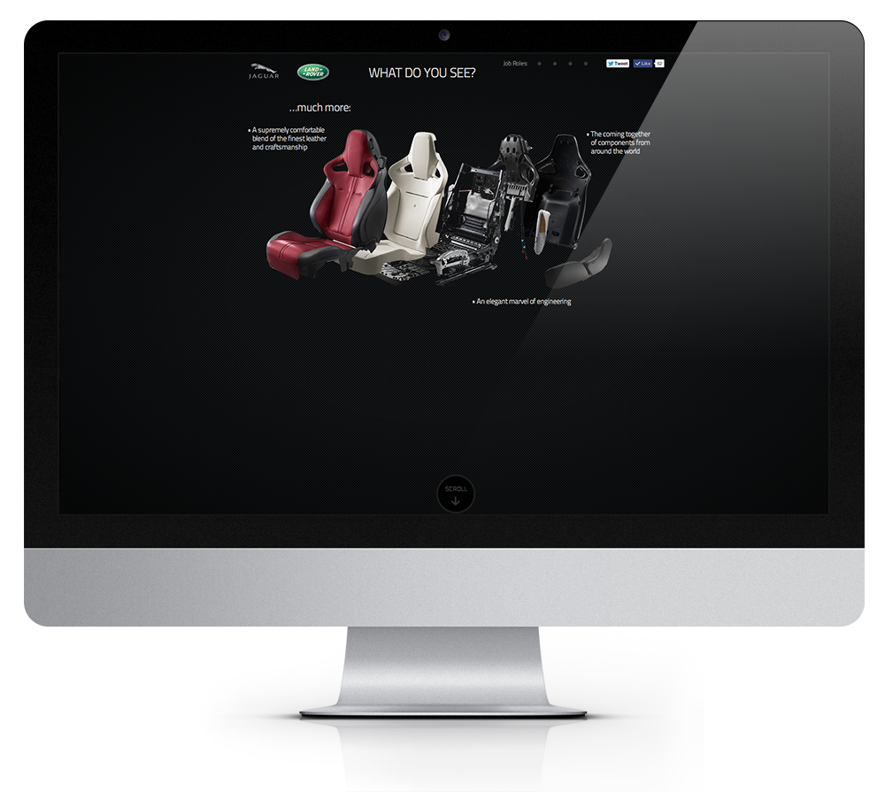
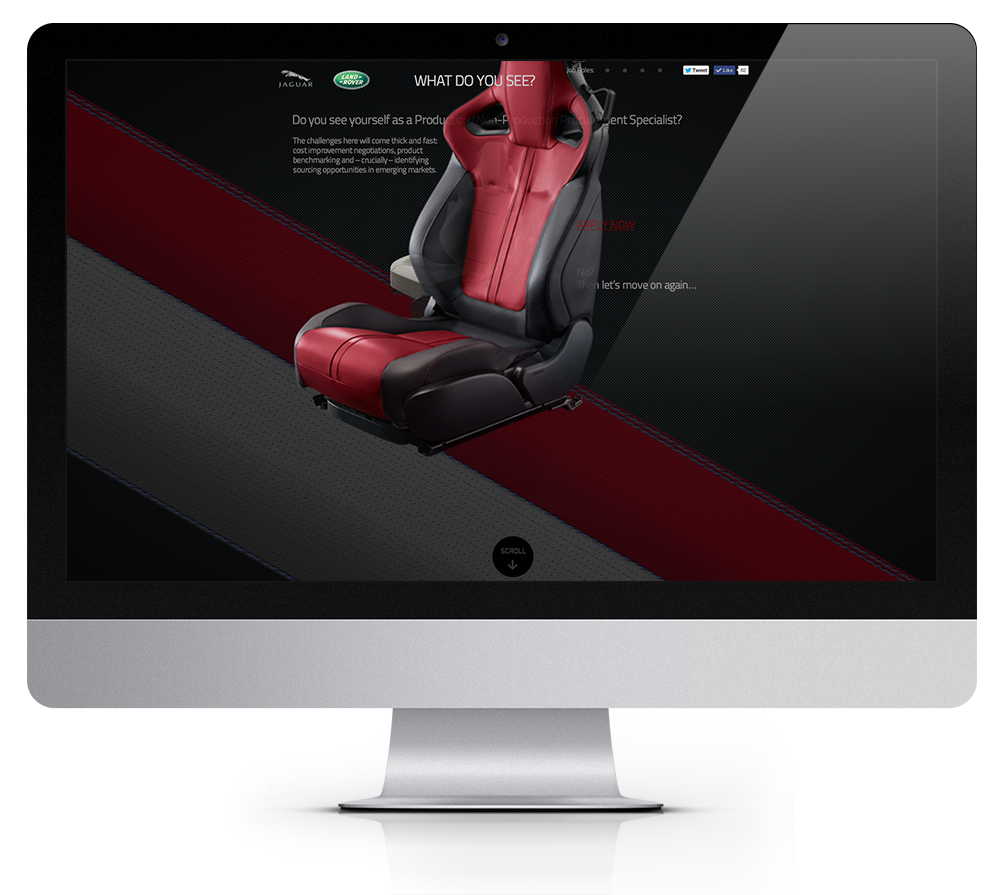

Jaguar Land Rover
UX / UI

Parallax website
Given a conceptual and technological freedom I was able to create a narrative led website to recruit purchasing managers for Jaguar Land Rover... This unique parallax experience not only served as a job application gateway but also allowed the user a unique immersion while getting the feel for the role...


